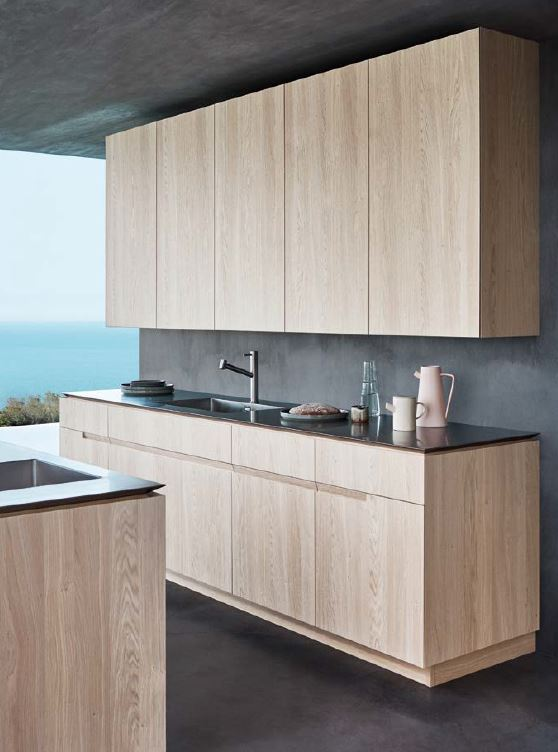
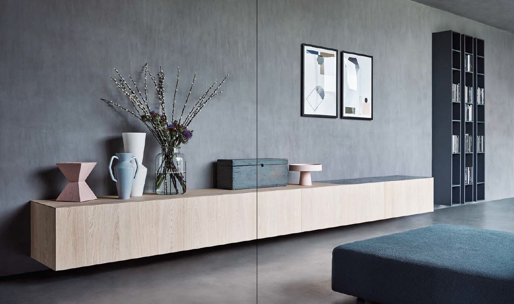
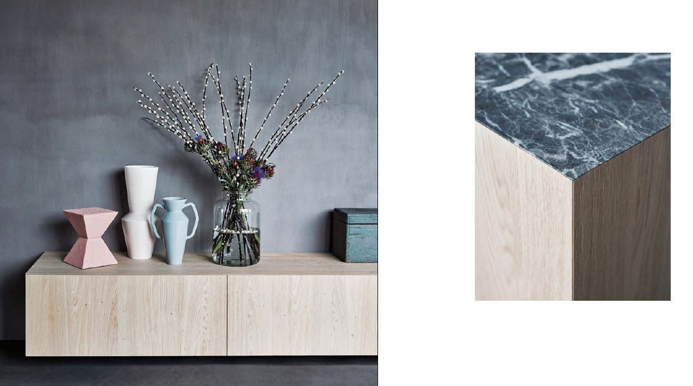
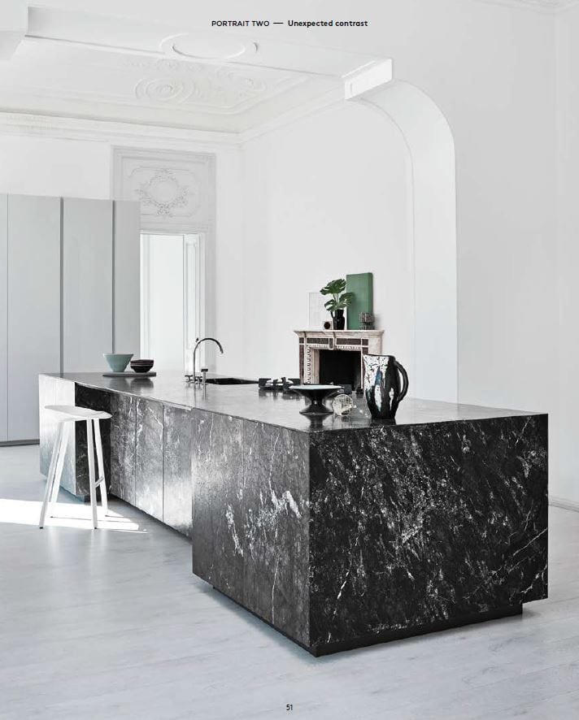
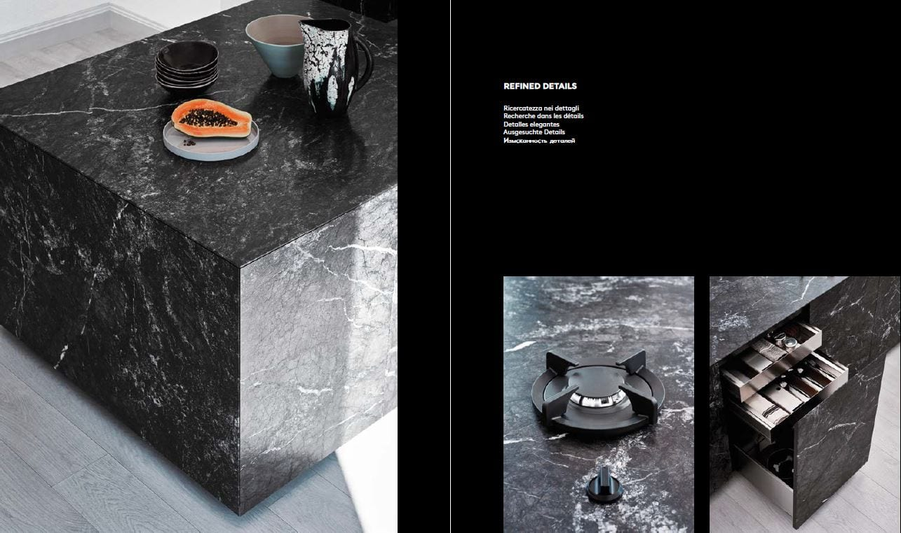
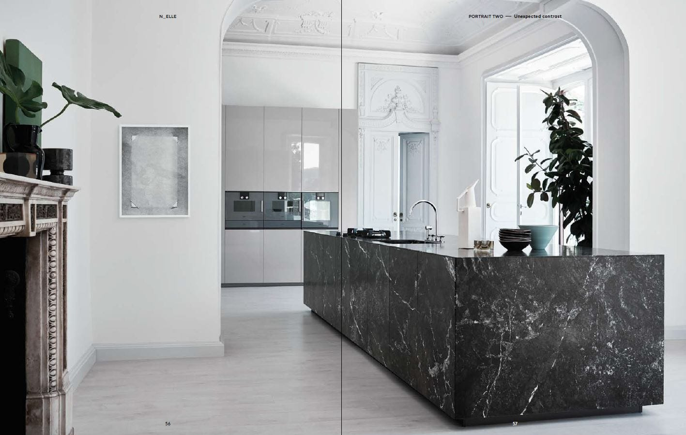

N_Elle
Design by R&D Cesar
N_Elle — система с дверцами толщиной 2,2 см, скошенными под углом 45° по периметру. Этот приём визуально убирает толщину фасада, создавая ощущение невесомости и подчёркивая чистоту линий в любой компоновке.
Система поддерживает различные способы открывания: push-to-open для полностью безручковых решений и системы Inside Grip с интегрированным захватом. Оба варианта сохраняют гладкость поверхности и единство плоскости фасада.
N_Elle органично сочетается с деревянными шпонами, мраморными столешницами и металлическими вставками — материалами, которые усиливают лаконичность формы, не нарушая её целостности.


Я ищу главное во всём. Научившись быть избирательным, я нашёл новые пространства в своей жизни — свободные от лишнего, наполненные тем, что действительно важно. Это не аскетизм, а осознанность: понимание того, что красота рождается в точности, а не в избыточности. N_Elle создана командой R&D Cesar — внутренним бюро фабрики, которое работает на пересечении инженерной мысли и архитектурного видения. Скошенный профиль под 45° — это принципиальное решение, которое меняет восприятие фасада целиком. Пространство, где нет лишнего, становится больше — и как комната, и как возможность.



Natural
Когда всё лишнее отброшено, форма говорит сама за себя. Свобода — моё истинное состояние.
Вот почему я нахожу время смотреть на море — туда, за горизонт. N_Elle организует пространство именно так: без лишних слов, с ощущением простора и глубины.
